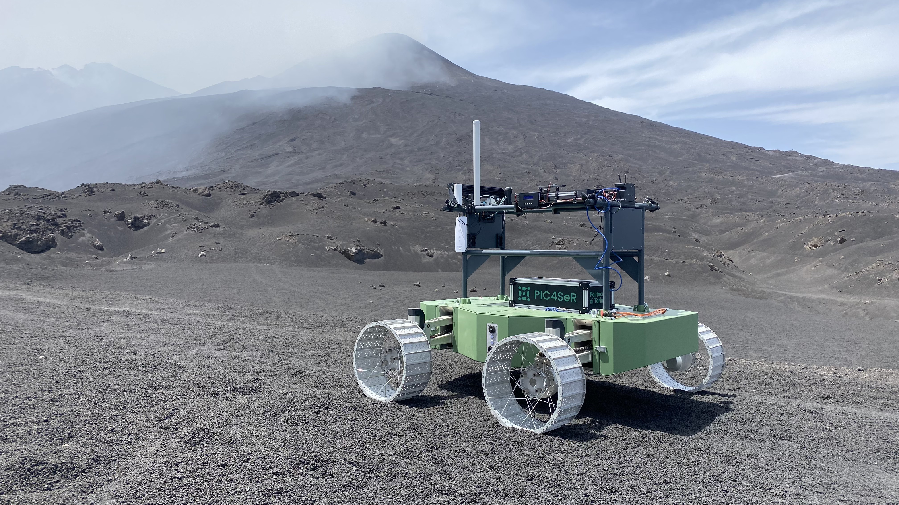

ULS: Universal Locomotion System
Lunar rover demonstrator funded by the Italian Space Agency and developed by Thales Alenia Space Italy.

The Universal Locomotion System (ULS) is a lunar surface mobility programme funded by the Italian Space Agency (ASI) under the call Tecnologie Abilitanti Robotiche e di Intelligenza Artificiale, with Thales Alenia Space Italy as prime contractor and a consortium including Leonardo, IIT, ALTEC, AIKO, Volta Structural Energy and the PIC4SeR centre of the Polytechnic of Turin.
Over its two-year duration, the consortium developed ETNA (Exploration Technology for Navigation & Autonomy), a TRL 5 rover demonstrator conceived as an open, modular and reconfigurable mobility platform for the emerging lunar economy, compatible with applications ranging from exploration to in-situ resource utilisation and the development of lunar infrastructure. After a first validation phase at the ALTEC facilities in Turin, which verified traction and stability on lunar- and Mars-analog terrains, autonomous navigation and teleoperation driving modes, localization, mapping and planning algorithms, and the performance of the electric power and distribution subsystem, the rover moved to the slopes of Mount Etna in July 2026: the volcanic landscape, steep slopes, granular soil and absence of vegetation closely replicate the conditions an autonomous vehicle will face on the lunar surface. The field campaign demonstrated regolith sampling in support of future ISRU operations, an autonomous AI-equipped drone for terrain surveillance and automatic classification of rocks, craters and safe paths, automatic docking and recharging at a fixed power station, and the deployment of communication cables and standardized payloads to simulate the creation of scientific bases. The programme concluded with a successful Final Review, confirming the locomotion technologies, the reliability of the autonomous systems and the versatility of the platform.
My contributions (PhD’s industrial secondment at Thales Alenia Space Italy, 2023-2024):
- Development of a multimodal state-estimation framework (Franchini et al., 2026) for the rover: sensor fusion of onboard IMU, stereo camera, time-of-flight cameras and wheel-odometry measurements, integrated in the autonomous navigation stack.
- Design of the rover Electrical Power System (EPS) and development of its embedded control and telemetry firmware.
- Implementation of a Zenoh Pico-based communication interface over TCP/IP between the EPS microcontroller and the rover’s OBC.
Project facts
- Period: Dec 2024 to Oct 2026
- Funding: Italian Space Agency (ASI), total contract €3.9M, prime contractor Thales Alenia Space Italy
- Consortium: Thales Alenia Space Italy, Leonardo, IIT, ALTEC, AIKO, Volta Structural Energy, Polytechnic of Turin (PIC4SeR)
- Outcome: ETNA rover demonstrator (TRL 5) validated at ALTEC facilities and on Mount Etna
More info